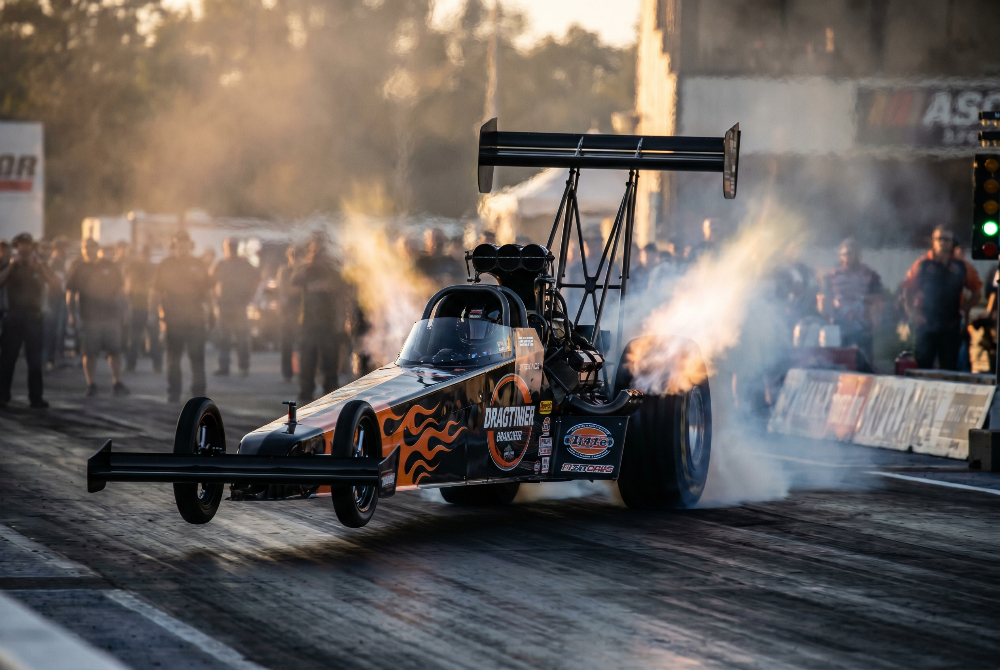

MRU, MRUV y graficos del movimiento. Aprendemos a describir, medir e interpretar como se mueven los cuerpos usando formulas, tablas y graficos.
Posicion, tiempo y velocidad constante. La formula v = Δx/Δt y los graficos posicion-tiempo.

Aceleracion, cambio de velocidad. Caida libre y movimientos con aceleracion constante.
Como leer y construir graficos posicion-tiempo y velocidad-tiempo. Pendiente y area bajo la curva.